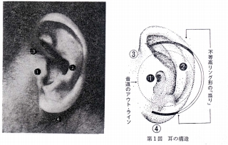
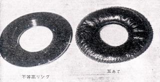
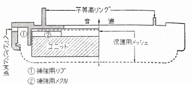
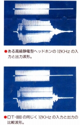
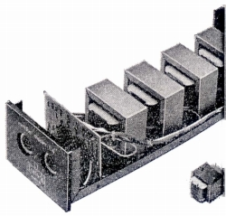
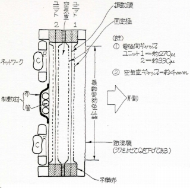
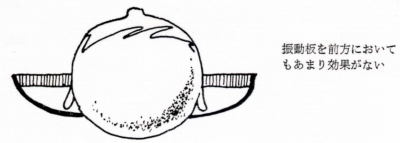
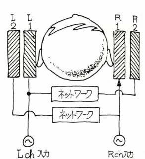
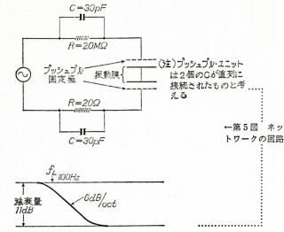

フォンテック・リサーチのヘッドフォンの特徴について
�T.各機共通の特徴
�@広帯域よりはバランス重視
再生帯域の広さよりも、高低のバランスが取れ、その間に目立ったピーク・ディップが存在しないことを重視していたようです。この条件を満たした上で帯域を広げるのが本道としています。こうした姿勢がカタログスペックにも現れ、周波数帯域は「聴感上フラットな帯域」を記載し、ローエンド機・A-4では50〜12,000Hzとなっています。この帯域の幅は当時のほとんどのダイナミック型を下回るものでした。
�A不等高リング・軽側圧
イヤパッドについて、音響室（チェンバー）の最小化の観点から耳のせ型を採用しています。SR-Xの開発者であるとの逸話を裏付けるような話ですが、丹羽氏によれば耳のせ型イヤパッドは側圧が不足すれば低音のロスが多く、逆に側圧を強めれば生理的な苦痛が多くなる性質があるそうです。また、古いコンデンサー型に多いドーナッツ状の耳覆い型のイヤパッドは中域で尾を引く傾向がでやすいそうです。そこで耳のせ型イヤパッドの下に耳の形に合わせた「不等高」リングを設け、軽側圧での密着性の高さを狙っています。この当時は他社に非対称型のイヤパッドはありませんので、かなり先進的な設計です。また設計側圧は20gとされ、たとえばAKGのK240Monitorは側圧350gであり、圧倒的な軽側圧設計です。



�B素っ気ないデザインのヘッドバンド
イヤパッドについては、多くの試作を繰り返したそうですが、全体のデザインは極めて素っ気ないもの。「個人的な」意見としていますが、ヘッドバンドのレザー等のカバーすら不要としています。また音楽鑑賞においては目を閉じて傾聴すべしとしており、他の動作中でのフィット感は考えていないようです。その為か、ローエンドから最上級機まで、そして歴代すべての製品が基本的に同一デザインです。ヘッドバンドの曲率には留意したそうですが、最終的には個人個人で微調整すべきと考えていたようで、現行のヘッドフォンでいえば「グラド」のヘッドバンドと同じような思想です。
�B膜エレクトレット・コンデンサー型
ドライバーはすべて膜エレクトレット・コンデンサー型です。
ダイナミック型については改良の余地が大いにあることを認めながらも、原理的な欠点の多さを指摘しています。またオルソダイナミック型に代表される動電全面駆動型についても、振動板を挟む磁石の厚みと複雑に設計しなければならない磁力分布がネックとなり、理想的な音道の確保が難しいとしています。
バイアス供給型のコンデンサー型、いわゆる純コンデンサー型については、フィールドエキサイターと永久磁石の関係にたとえ、バイアス供給型をエレクトレット式より本格的とする見方を否定しています。また振動膜面抵抗を無限大にできること、温度/湿度による安定性、大音量時の放電が起こらないことなどをバイアス供給型のコンデンサー型に対する利点としています。(*)
またエレクトレット型のなかで、固定極をエレクトレットとするバックエレクトレット型については、動電全面駆動型と同様に固定極の構造から音道設計に制限があるとしています。
(＊管理人の個人的な見解）
管理人の経験では耐久性の面に関してはバイアス供給方式の違いよりも、各製品ごとの設計と使用者の保管状態の方がはるかに影響は大きいと感じます。複数メーカーのコンデンサー型を使用しましたが、調子の悪い機種は純コンデンサー型、エレクトレット型どちらにもありました。またエレクレット型の電圧寿命について当時の記事を読みましたが、悪影響を及ぼすものは高温（70度以上）での保存と埃とされており、この２つは純コンデンサー型においても製品寿命に非常に大きな影響があると思います。
�C背面の制動処理
コンデンサー型の長所とされる空気に近い重さの振動板。これについては音の立ち上がりの早さだけではなく、減退は大きいものの、たち下がりの悪さもあるとしています。その対策としてユニット背面に共鳴現象を利用した制動管を設けています。スタックスがラムダ系に代表される鳥かごのような構造を発展させていったのとは違った方向性です。

（自社製品の過渡性能の良さを訴えるドイツＢ社のカタログ）
�Dトランス型ドライバーの採用
ドライバーは大容量のトランスを使用したアダプタータイプを採用しています。丹羽氏によれば、当時すでにスタックスが実現していたトランスレスの専用アンプは非力すぎるそうです。丹羽氏の文章を引用すると「出力は精一杯400V、音楽の持つ複雑な波形を完全に表現するには役不足」となります。確かに当時のスタックスの製品の出力は最大350Vぐらいでした。現行製品ではSRM-007tAで340V、SRM-006tAでは300V、出力の最も大きいSRM-727Aで450Vであり、史上最強とされるSRM-T2でも630Vです。フォンテックのアダプターはコア・ボリュウムの大きいトランス（UL規格1,500V、実効値は約1/3としている）をシリーズ接続したもので、サイズだけでみてもスタックスの最上級のトランス型アダプターSRD-7MK2級のトランスをチャンネルあたり、倍の個数使用していることになります。

（初期のアダプターのトランスと他社のトランスと対比した写真 他社の製品全部がそうとはいわないが、小型のトランスの製品が多いのは事実）
(上記のアダプターより後期のE-8の画像 8基使用と、やはりトランスが強化されているようだ。 画像は「Jupiter」氏からいただきました。）
�T.上級機の特徴
�@複合振動系
単一振動系だったユニットを耳の方向に重ね合わせるかたちの複合振動系にしています。適当な容積の空室を経て、音響的には直列に配置し、電気的には並列に結線して同位相で駆動します。初期の製品では2枚の振動板でしたが、後期の製品では3枚の振動板の製品もあります。

（Minifon A-4/MK2の構造図 複合振動系の様子や背面の制動処理の概要がわかる。「ネットワーク」は次の「前方定位型」に関連する）
�A前方定位形（＊）
さらに最上級機では複合振動系を利用して音像定位の改善を目指しています。丹羽氏によればユニットの配置を変えること、たとえばユニットを耳の前にもっていっても聴感特性は変わるが、音像定位には関係ないとしています。むしろユニットと鼓膜との間の空室（キャビティ）が大きくなり悪影響のほうが大きいとしています。

（丹羽氏の文章に添えられていたイラスト SR-Σを否定するかの内容）
丹羽氏が出した結論は、低域の信号を中心に左右の信号をブレンドし、複合振動系の外側のユニットを利用して再生し、前方定位を実現しようとしました。その為このブランドの最上機は「前方定位型」とされています。
 
(＊補足）
1970年代まではバイノーラル型の音像定位が、ヘッドフォンの大きな欠点の一つとされていた時代でしたので、各社や実験・試作に強い評論家が音像定位の改善に取り組んでいました。中にはベイヤーのHEADZONE
PROのようにヘッドモーションの変化を再現する実験を行っていたものもあります。実際の商品では２ウェイ型のユニットを利用した東芝のHR-50や、4chヘッドフォンであること利用したコスのPhase/2+2、電気信号を加工するテクニクスのアンビエンス・コントローラーなどがあります。
フォンテックのインデックスへ